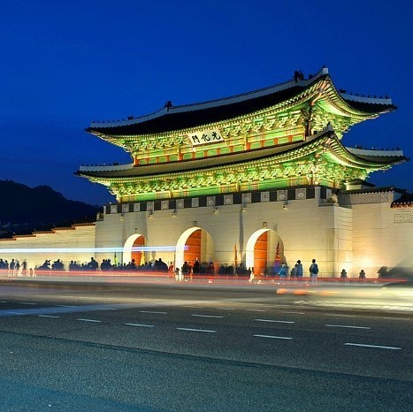

건축물 (Architecture in Korea)

음식 (Korean Food)
한국의 문화 (Native culture of Korea)
축제 (Festivals in Korea)
한국의 문화 (Native culture of Korea)
한국인의 정 (Korean emotional attachment)
빨리빨리 문화 (ppalli ppalli culture)
K-pop
야간자율학습 (self study at school at night)
밑반찬 (Side dish)
K-입시 (Korea College entrance examination)
대중교통 문화 (Public transport culture)
한국의 치안 (Korean Safety)
한국의 나이 문화 (Age culture in Korea)
한국의 배달 문화 (Korean delivery culture)